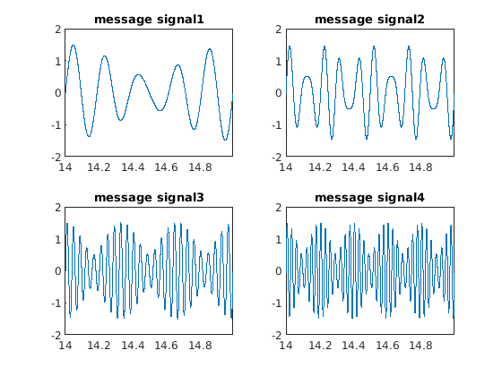
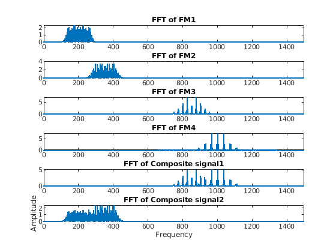
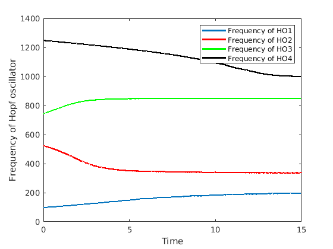

This is the readme for the models associated with the paper:
Soman K, Muralidharan V, Chakravarthy VS (2018) An Oscillatory Neural Autoencoder Based on Frequency Modulation and Multiplexing. Front Comput Neurosci 12:52
http://dx.doi.org/10.3389/fncom.2018.00052
This MATLAB code was contributed by K. Soman.
To run type this script name at the matlab command prompt:
FM_mod_mux_demod_autoencoder_with_lahn
After a brief while you will see figures created which includes these similar to the paper's:
figure 2:

figure 3:

figure 4:
